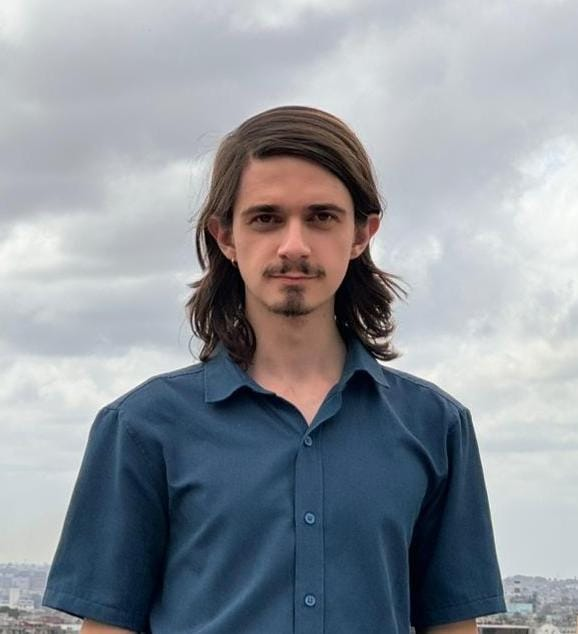
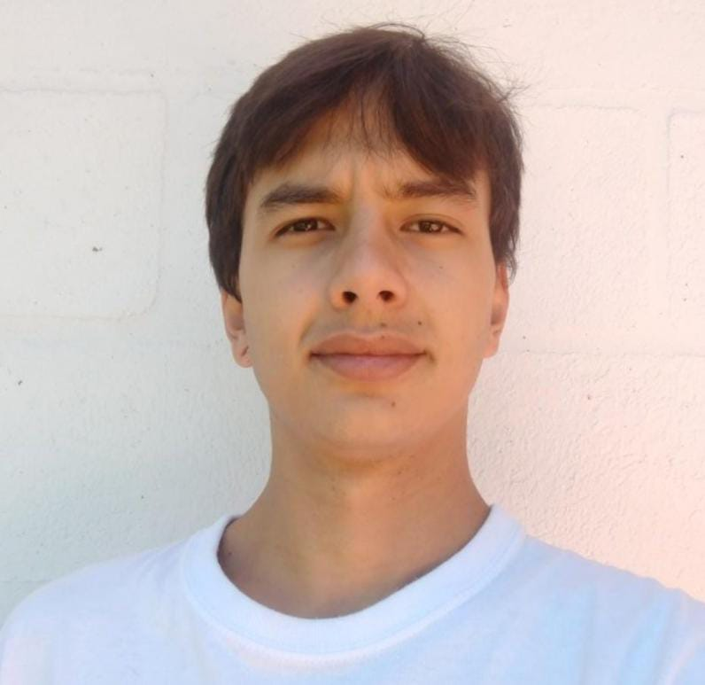

Juan Pablo Arias
24 años, cursando el noveno semestre de comunicacion y lenguajes audiovisuales en la universidad de Medellín. Especializado en la fotografía de naturaleza y animales, pero con experiencia en fotografía de producto, fotografía de vehiculos, fotografía de evento y fotografía aerea. Tiene experiencia en dirección de videoclips y cortometrajes, y colaboraciones en videoclips como operador de dron. Tiene un gran interes por las artes en general y la posibilidad de convergerlas en los procesos. La música, la naturaleza y un café son suficientes para crear.
Tiene una pagina de fotografía donde explora los diferentes formatos que deja la luz, desde lo analogico con peliculas de 35mm, hasta fotografía estenopeica. Pero su fuerte es la fotografía digital. La pagina de fotografía está bajo el usuarío de @jp.galería.

Simon Restrepo
23 años, es profesional en comunicación audiovisual, egresado del Politécnico JIC, actualmente comunicador audiovisual para la emisora Latina stereo, experiencia en cubrimiento de eventos, fotografía de producto, trabajo audiovisual con drones, grabación y edición de contenidos para redes sociales, dirección y escritura de guion para cortometrajes. Tengo un gran interés y vocación por el cine y soy apasionado por la música afroantillana.
Daniel Echeverri
24 años, se encuentra cursando el séptimo semestre de Comunicación Audiovisual, en cuanto a lo académico, ha sido director, guionista y montajista del cortometraje “Doppelganger”, cámara y montajista de la serie “Umbria”, Realizador general del documental “Helice”, Sonidista y montajista en el cortometraje “La noche de las crisálidas”. También ha sido montajista del cortometraje “Mi hermoso cadalso” y de “Ruido blanco”. En la cotidianidad su oficio preferido es la edición y el montaje, amante de la música y el sonido en general.
Detrás de camara
Procesos de preproducción